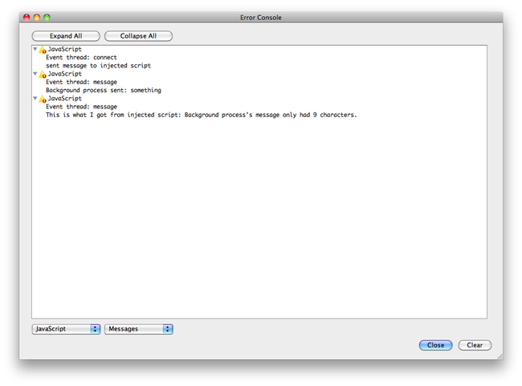

Opera extensions: messaging
From Opera 15 onward, Opera 11 & 12’s extension format is no longer supported, and instead, we’ve switched to Chromium’s extension model. Check out our new documentation for developing extensions for Opera 15 and higher and start building your own extensions.
Introduction
With extensions, you have the ability to create and add exciting new functionality to the Opera desktop browser. As mentioned in other articles, Opera extensions contain a background process, injected scripts, and sometimes popup script too. In this article, we will take a look at how to communicate between all three.
Contents
- Communicating between background process and injected script
- Communicating between popup and background process
- Communicating between popup and injected script
- Wrapping it up
- Further reading
Before we continue, you should download the following three extensions and install them in the newest version of the Opera browser. We'll explain everything with the help of the code in these extensions.
Communicating between background process and injected script
Opera uses postMessage() to post a message, and we'll use that the majority of the time. However, if you want to post a message from the background process to ALL of the resources of that particular extension (like injected scripts, popup window, preference page etc), then you write the following in the background process:
opera.extension.broadcastMessage("Hello there");Now you've sent a message, the injected script needs to catch it, which is done like so:
opera.extension.onmessage = function(event){
var thecatch = event.data; // event.data in this case will contain the string "Hello there"
}It's as simple as that. In the above code, the background process is firing a message using broadcastMessage to the injected script, and the injected script is listening for it. When it gets the message, the stores it in a variable called thecatch. Keep in mind though, that using broadcastMessage will send the message to all injected scripts and popups, so it should be used sparingly. Normally, you'll want to communicate to just one popup or injected script (the one inside your own extension) using postMessage or message channels.
broadcastMessage() only takes one argument: a string or an object. For example, either broadcastMessage("hi") or broadcastMessage({'say': 'hi', 'to':'adam'}). The same thing goes for postMessage() communication that we'll discuss in this article. However, for the sake of simplicity and consistency, we're only going to use strings in the examples being discussed below.
Let's illustrate this further by taking a look at our first test example.
The background process has an event listener for load, and all the code is inside the function call for it. You can read the opera.postError logs in Tools > Advanced > Error Console.
In Opera 11 beta onwards, you can easily open the Error Console by the keyboard shortcut [Cmd|Control]+Shift+O
window.addEventListener("load", setupConnection, false);
function setupConnection(){
// When the injected script is activated, it connects with the background process.
opera.extension.onconnect = function(event){
// Post message to the source, that is, the thing which connected to us (in this case the injected script)
event.source.postMessage("something");
// Post this message in the opera error console
opera.postError("sent message to injected script");
}
// Listen for messages
opera.extension.onmessage = function(event){
// Post a sentence (which includes the message received) to the opera error console
opera.postError("This is what I got from injected script: "+event.data);
}
}Let's focus first on the following code snippet:
opera.extension.onconnect = function(event){
event.source.postMessage("something");
opera.postError("sent message to injected script");
}onconnect is fired whenever something connects to the background process, in this case, when the injected script is activated on a document, thus creating a connection with the background process. So as soon as the injected script loads, the onconnect event is fired.
The onconnect handler in the background contains a reference back to the injected script in event.source. This message port can then be used to directly communicate back to the injected script, which is done here by sending the string "something" as a message using event.source.postMessage(). We also send a small string to the error console, just to keep track of what's happening.
Let's leave the background process for a while and focus instead now on the injected script:
opera.extension.onmessage = function(event){
// Get content of incoming message.
var message = event.data;
opera.postError("background process sent: " + message);
// Replies back to background process.
var reply = "background process's message only had " + (message ? message.length : 0) + " characters.";
event.source.postMessage(reply);
};Here, onmessage is invoked whenever the injected script receives a message. We store the content of the message in the variable message. Next we use opera.postError to display a sentence in the error console along with the message sent by the background process.
To acknowledge receipt of the message, we post back a message to the background process using the event.source of the incoming message. This always holds true: a message event.source always points back to the sender.
So now, we've seen how messages are received by the injected script, and also how they can be transmitted back to the background process.
The next step is for the background process to catch this message and do something with it. So let's focus on the background process again, this time on the other part of the script:
// Listen for injected script messages
opera.extension.onmessage = function(event){
// Post a sentence (which includes the message received) to the opera error console.
opera.postError("This is what I got from the injected script: " + event.data);
}Here, whenever a message is received, it posts a sentence containing that message data onto the error console.
So in summary, this is what happens in the extension:
- The background process sends a message to the injected scripts
- The injected script catches that message and writes something on the error console, which includes the message given by the background process
- The injected script then replies, sending a message back to background process
- The background process writes a sentence into a string on the error console, which includes information about the message sent by the injected script.
If you have installed the extension (reload the page for the injected script to take affect) then go to the error console. You should find the messages shown in Figure 1 written into it.

Figure 1: The error console, showing the messages sent to it by the extension.
So we've now seen how both background process and injected script can post messages and catch messages. Next, we'll see how this is done with a popup.
Communicating between popup and background process
We'll be using the second extension example for this. Notice that there is no includes/ folder or any injected scripts — it's just the background process, and the HTML files along with config.xml and an icon.
You already know from previous articles how to create a UIItem like a button, so we won't cover that. Let's focus on the following piece of code in background.js:
opera.extension.onconnect = function(event){
event.source.postMessage("sending something");
opera.postError("sent message to popup");
}As we know from the previous example, this will be run when something connects to the background process, in this case, the popup. The function sends the message "sending something" to the popup, and the message "Sent message to popup" to the error console.
Let's go to the popup page now:
<script>
window.addEventListener("load", function(){
opera.extension.onmessage = function(event){
event.source.postMessage("do whatever you want with this message");
opera.postError("sent from popup to background process");
}
}, false);
</script>Here we listen for a message to arrive, and when it does we send a message back to the source. We also post something to the error console once again. So now the popup script receives a message, and sends a message back to the background process. All that's left now is for the background process to catch it.
Let's go back to the background process again, and study the following code:
opera.extension.onmessage = function(event){
opera.postError("This is what I got from injected script: " + event.data);
}Here the background process listens for a message, and when there is one, it posts something to the error console, with the content of the message received as part of the message. As you can see, we approximate and label the message as coming from an injected script here too.
So in summary, this is what happens in the extension:
- The background process sends a message to the popup script.
- The popup script catches that message and writes something onto the error console, which includes the message given by background process.
- The popup then sends a message back to the background process
- The background process writes something into a string on the error console, which includes the message sent by the popup script.
So the way it behaves is actually pretty similar to the previous example, its just that with this example, we did not have an injected script file at all in the includes/ folder. Rather, we used a popup and the popup document's script communicated with the background process.
If you install the extension, click the extension button to trigger the communication with the popup then open up the error console, you should see the messages shown in Figure 2.
Figure 2: the error console showing the messages sent to it by the extension.
Communicating between popup and injected script
Let's now look at how to communicate between a popup and an injected script. The background process will be used initially to make the connection, then both popup and injected script will talk without the background process.
We achieve this by creating a message channel. You can learn more about message channels by looking at the HTML5 cross document messaging specifications, which is what the messaging for extensions is closely based on.
We'll explain this using the third test example, so fire up your text editor and have a look at the code. Let's first look at the background process. You'll notice some familiar things, like the code to add a button and a popup, etc. Let's delve into the interesting bit.
Let's look at the onconnect event here:
opera.extension.onconnect = function( event ){
if( event.origin.indexOf("popup.html") > -1 && event.origin.indexOf('widget://') > -1 ){
var tab = opera.extension.tabs.getFocused();
if( tab ){
tab.postMessage( "Send a port", [event.source] );
opera.postError('sent a message to injected script');
}
}
}We first check whether the origin of the connection is the popup file (popup.html) and whether it is the same popup.html that is included in our extension file or not (by checking for 'widget://'). If so, then it will send a message to the injected script, together with a reference to the source of the connect (the popup).
Now look at the injected script:
var counter = 0;
var background;
opera.extension.onmessage = function( event ){
if( event.data == "Send a port" ){
background = event.source; // in case you need to send anything to background, just do background.postMessage()
var channel = new MessageChannel();
event.ports[0].postMessage( "Here is a port to the currently focused tab", [channel.port2] );
opera.postError('post sent from injected script');
channel.port1.onmessage = handlePopupMessage;
}
}Here we initially set the counter to zero. The injected script listens to any message, and if the message if 'send a port' (the same that the background message sends when the popup connects to it), then a message channel is set up.
Essentially in message channels:
- MessageChannel.port1.postMessage -> will fire MessageChannel.port2.onmessage
- MessageChannel.port2.postMessage -> will fire MessageChannel.port1.onmessage
So in this case, we want to send port2 to the popup. When the popup posts to port2, the injected script can listen to it on port1.
When we recieve a message from the popup on port1, we check call the function 'handlePopupMessage' (more on that later).
The message sent by the background script also had a refernce to the popup. This reference to the popup is available as event.ports[0]. We now post a message to the popup, together with a reference to port 2 of the message channel.
Now let's look at the popup file:
var theport;
function handleMessageFromInjectedScript( event ){
opera.postMessage( "Message received from the injected script: " + event.data );
}
opera.extension.onmessage = function ( event ){
if( event.data == "Here is a port to the currently focused tab" ){
if(event.ports.length > 0 ){
theport = event.ports[0];
theport.onmessage = handleMessageFromInjectedScript;
}
}
}
function sendMessage(message){
var sendstring = message;
if (theport){
theport.postMessage(sendstring);
opera.postError('the send sent is: '+sendstring);
}
}Lets start from the onmessage part. Here it checks whether the message is the same one which is supposed to come from the background process. If so, it saves a reference to that port (port2) in the 'theport' variable. Whenever a message a message is received on it, it calls the function 'handleMessageFromInjectedScript', which would post a message to the console. Then in the end we post a message back on this port, which will be received by the injected script.
In the HTML, we have
<p><a href="javascript:sendMessage('change title');">Change Title</a></p>This calls the sendMessage() function, which takes the string 'change title' and sends it to the injected script.
Finally, we come back to the injected script. Remember that we have a function to handle messages from the popup? Lets look into that function
function handlePopupMessage(e){
opera.postError( "Message received from the popup: " + event.data );
if (event.data == "change title"){
document.title = "You have clicked " + counter + " times";
counter++;
}
}The function 'handlePopupMessage' is called whenever a message is recieved from the popup on port1. It checks whether the message is 'change title', and if so, it changes the document title and increments the counter.
So in summary, the following things happen:
- Background process loads
- The page loads, and so does the injected script.
- User clicks on popup, which connects to background process. The
onconnectevent is fired in the background process which fires a message to the injected script. The message which is sent to the injected script, also has a reference to the popup. - The injected script listens to this message, and sets up a message channel. It takes the reference to the popup (which came along the message it has just recieved) and posts a message to it. That message has a reference to channel 2 of the message channel.
- The popup listens to this message and stores the reference to the second channel.
- Now whenever a message needs to be sent to injected script, the popup just sends a
postMessageto it. - That message sent on port2 by popup will be listened on port1 by injected script. When a message arrives, it checks which kind of message it is and performs the appropriate action (in the example's case it changes the document title)
Wrapping it up
Communicating between various parts of an extension is pretty easy once you get to know how to use postMessage along with the onconnect and onmessage handlers. You can also use message channels, which is required when it comes to communicating between a popup and an injected script. This article has shed some light on how to pass around messages in three scenarios: between background process and injected script; between background process and popup; and between popup and injected script.
Further reading
- Accessing an Opera extension's background process
- Attributes and methods regarding the Injected script API reference
- Attributes and methods regarding the Popup process API reference
This article is licensed under a Creative Commons Attribution 3.0 Unported license.
Comments
The forum archive of this article is still available on My Opera.
-

The first example extension is an invalid extension.
-

I'm not sure if I'm doing something terribly wrong, but I can't get the injected script (/includes/injected.js) to communicate with the bgprocess (/background.js)
No new comments accepted.vitorrd
Friday, June 22, 2012
Christoph
Wednesday, July 11, 2012
opera.extension.onconnect does never fire over here in 12.50